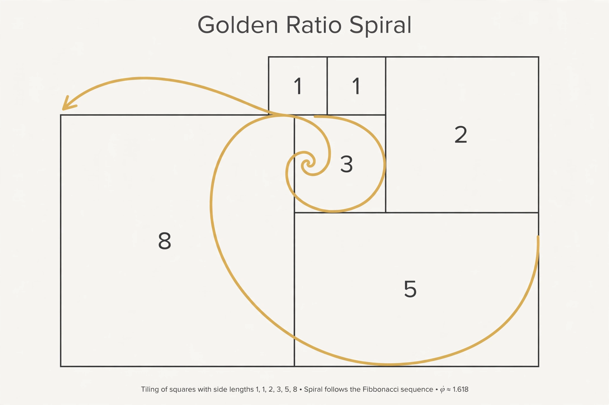

Fibonacci sequence

[Image: A spiral drawn over squares whose side lengths are Fibonacci numbers]
The Fibonacci sequence is the sequence of numbers in which each number is the sum of the two preceding ones: 0, 1, 1, 2, 3, 5, 8, 13, 21, …. It is named after the Italian mathematician Leonardo of Pisa, called Fibonacci, who introduced it to Western mathematics in his Liber Abaci (1202) through a problem about breeding rabbits — though Indian mathematicians had described it centuries earlier.
The ratio of consecutive terms approaches the golden ratio, and the sequence has a closed-form formula (Binet's formula) involving that ratio — a surprising bridge between whole numbers and irrational ones.
Occurrences and culture
Fibonacci numbers appear in the spirals of sunflower heads and pine cones (through efficient packing), in the Euclidean algorithm's worst case, and in computer science as a cautionary example of naive recursion.
Popular culture often overstates their presence in art and nature; mathematicians distinguish the genuine botanical patterns from wishful pattern-matching.